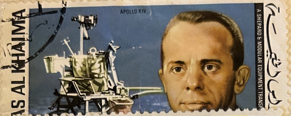
| SOURCE | TITLE| IMAGE MATCH | click to source page |
| eBay | Ras Al Khaima 1970, Astronaut Alan Shepard, 1 Riyal (Air Mail), FAST SHIPPING! | eBay | 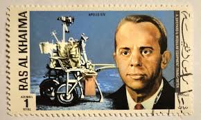 |
| eBay | SET OF 6 Ras Al Khaima 1971 SPACE STAMPS AIRMAIL Moon Lunar Kennedy Apollo | eBay | 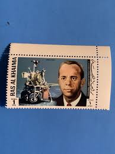 |
| 1969, ALSEP Press briefing October 2, 1969 as Apollo 12 LMP Lunar Module Pilot Alan Bean gave a detailed press briefing on the ALSEP - Apollo Lunar Surface Experiments Package equipment he | 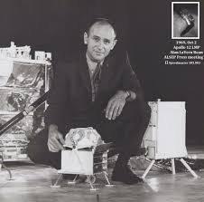 | |
| Revell XSL-01 Manned Space Ship model kit history | 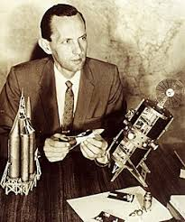 | |
| collectSPACE.com | Collection: SkyMan1958's space artifacts - collectSPACE: Messages | 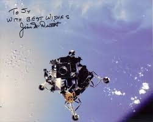 |
| University Archives | Lot - Buzz Aldrin Apollo 11 LM Signed Photo, NASA Blue Number | 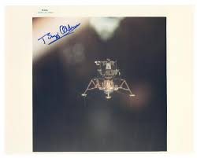 |
| Avion Thematics | Congo 2014 Heroes Of NASA - Kurt H Debus Perf Sheetlet Containing 4 Values Unmounted Mint, stamps on space, stamps on personalities, stamps on rockets, stamps on satellites | 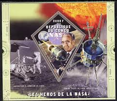 |
| Colorado State University | Surveyor-3 visited by Apollo-12 by Don Hillger and Garry Toth | 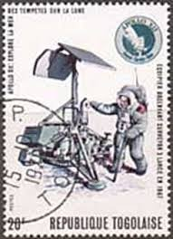 |
| Todocolección | congo 1999 sheet + 4 deluxe sheets mnh fauna di - Buy Antique stamps of Congo on todocoleccion | 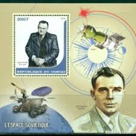 |
| The McMahan Photo Archive | Apollo 9 Lunar Module Spider Earth Orbit Photo Print for Sale | 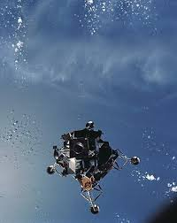 |
| Premiere Collectibles | Apollo 11 (3) Armstrong, Aldrin & Collins Signed Matted 10.75x13.45 Photo BAS | 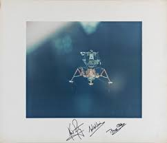 |
| Dreamstime.com | Apollo 11 Moon Landing editorial photo. Image of collection - 85366501 | 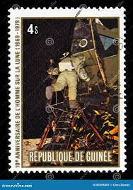 |
| Apollo fuel cell performance verification tests began in 1966 | 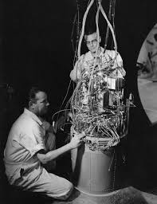 | |
| The Worlds - This photograph of Alan Shepard was taken in 1961 while he was describing his first spaceflight – the first American manned spaceflight. It is double exposed here with a | ||
| Avion Thematics | Staffa 1982 Horseguards Imperf Deluxe Sheet ( 2 Value) Unmounted Mint, stamps on militaria, stamps on horses | 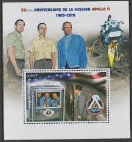 |
| Smithsonian Magazine | The Biggest Industrial Boom in U.S. History | 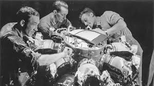 |
| Simon Cronk | Sarzin Covers 1966 | Simon Cronk | 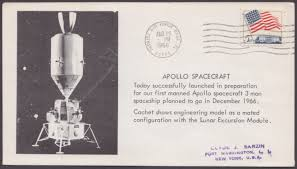 |
| The Apollo 9 Lunar Module (a 30,000 lb. vessel nicknamed “Spider” by crew members Scott, McDivitt and Schweichkart), 100 miles above the Atlantic Ocean, March 1969. Great shot. Like a microorganism under microscope. : r/dragonutopia | 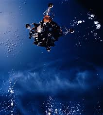 | |
| eBay | NASA Lunar Module Eagle Postcard John F Kennedy Space Center Moon Landing Tour | eBay | 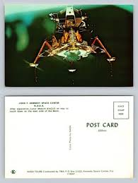 |
| YouTube | The Rocket Sled Trials of Colonel John Stapp - YouTube | 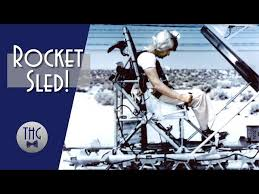 |
| Sotheby's | APOLLO 17]. EXPLORING TAURUS LITTROW. COLOR PHOTOGRAPH, SIGNED AND INSCRIBED BY GENE CERNAN | Space Exploration | Books & Manuscripts | Sotheby's | 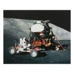 |
| Artistic Licence Renewed | Interview with Dr. Ian Kinane, Editor The International Journal of James Bond Studies | Artistic Licence Renewed | 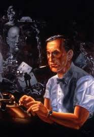 |
| Blogger.com | Dreams of Space - Books and Ephemera: March 2016 | 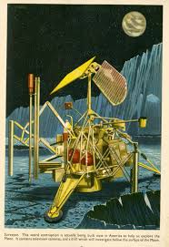 |
| Apollo Space high-resolution mission images and autographs | 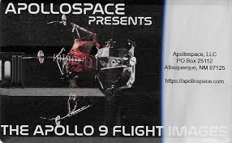 | |
| Colorado State University | Proton-series satellites | 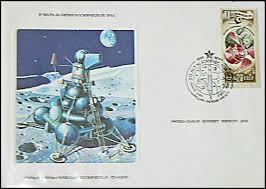 |
| One of my favorite crews. Laid back Apollo 14 crew portrait at KSC in 1970. | 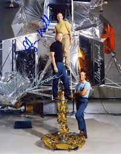 | |
| X | Project Pandora tested to see if microwaves could be used as a weapon of mind control | 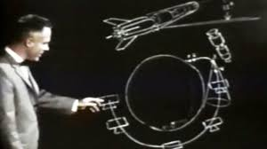 |
| Simon Cronk | Sarzin Covers 1967 | Simon Cronk | 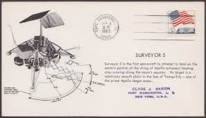 |
| cyberneticzoo.com | 1960 - "REMORA" Manned Space Manipulator - Bell Aerosystems (American) - cyberneticzoo.com | 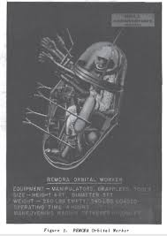 |
| Dateline 25 January 1965. Here, Pete Conrad is practising a 'stand-up EVA' (SEVA) out of the LM docking hatch. The astronaut would climb up onto the ascent engine cover inside the LM | 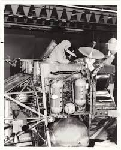 | |
| Hack the Moon | James Kernan | Hack the Moon | 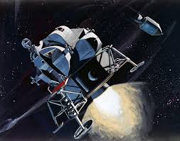 |
| Study.com | Space Probe Names, Uses & Mission Stages | Study.com | 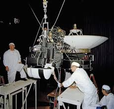 |
| RR Auction | Apollo-Soyuz Signed Photograph | RR Auction | 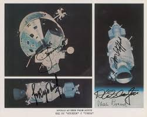 |
| eBay | US SPECIAL EVENT COVER ASTRONAUT CACHET FIRT MAN ON THE MOON POSTMARK 1971 | eBay | 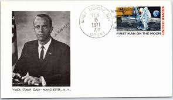 |
| commonwealthstamps.com | Niue 1979 First Landing on the Moon Sg 301 Fine Used | 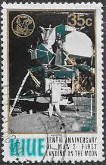 |
| Galerie Roger-Viollet | Diver of the Comex, in front of the "Atlante". Boat show of | 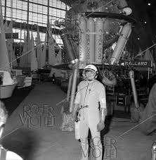 |
| Apollo 9 - On Board Camera - Hosted by Google | 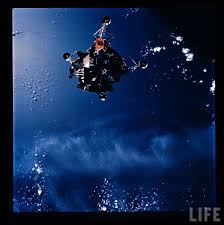 | |
| eBay | ORIGINAL 1969 NASA B&W PHOTO APOLLO 12 ASTRONAUT ALAN BEAN TALKING ABOUT ALSEP | eBay | 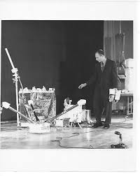 |
| Express.co.uk | Asteroid collision: Apollo 9 astronaut's close encounter: 'Came down through our altitude' | Science | News | Express.co.uk | 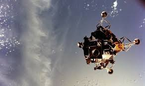 |
| Wernher Von Braun's first lunar lander design. This behemoth held 25 astronauts and weighed in at an extraordinary 8,739,000 lbs.The vehicle was 160 ft tall, 108 ft in diameter. c.1950's : r/RetroFuturism | 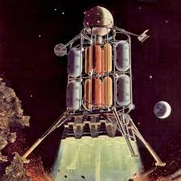 | |
| YouTube | Apollo 17 Remastered (50th Anniversary) [4K] - YouTube | 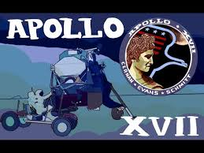 |
| Joseph Lee - Jumpsuit | LinkedIn | 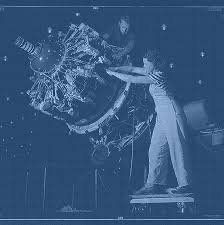 | |
| Encyclopedia Astronautica | Apollo 9 | 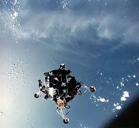 |
| eBay | Yuri Gagarin astronaut Vostok space ss Lollini 10485 IVO 20BA #CDI2013-26 IMPERF | eBay | |
| Omega Watch Forums | The Gift Guide For Speedmaster Enthusiasts | Omega Watch Forums | 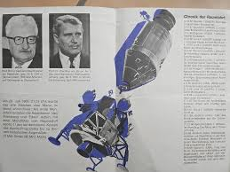 |
| The University of Kansas | untitled (Mariner 2 in launch position) | Spencer Museum of Art | 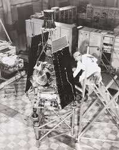 |
| eBay | VTG RARE Official NASA Emblems PATCHES Space Missions Willabee Ward APOLLO IX | eBay | 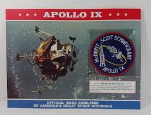 |
| University Archives | Lot - Apollo 11 Armstrong, Aldrin, and Collins Signed Eagle Descent Photo, Probably the Finest Known With Zarelli LOA | 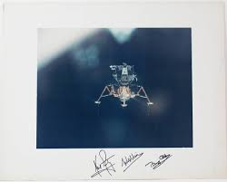 |
| About.me | Viktoria Blomberg Book - Malmö, Sweden, AppByrån, Lund University, Malmö Yrkeshögskola, Malmö Högskola | about.me | 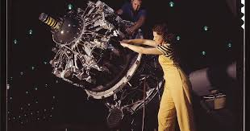 |
| eBay | APOLLO 9 SEPERATION IN SPACE MAR 7,1969 SARZIN SPACE COVER NASA | eBay | 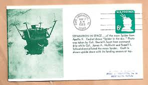 |
| Retro Space Images - Retro Space Image of the Moment - Project Mercury astronaut Deke Slayton during a training session on a centrifuge in 1960. Scan by Retro Space Images | Facebook | 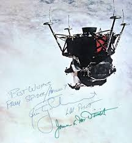 | |
| Wikimedia.org | Category:Pratt & Whitney R-1830 - Wikimedia Commons | |
| Check out the SWFO Data Products and Science page to discover how the Space Weather Follow On (SWFO) program's instruments will support a wide range of space weather applications: bit.ly/4hvlS1Y | ||
| NASA (.gov) | THE ARI'EL I S'ATELllfE- | |
| eBay | Space Voyager 1 MNH Stamps 2022 Niger M/S + S/S | eBay | |
| eBay | Apollo 9 Lunar Module Spider tested in earth orbit above ocean Photo Print | eBay | |
| YouTube | NASA FILM "THE MISSION OF APOLLO-SOYUZ" RENDEZVOUS IN SPACE 67274 - YouTube | |
| Flickr | Bell-Remora_v_bw_o_n (original ca. 1960 photo) | The "REMORA… | Flickr | |
| Garage Art | Apollo 11 50Th Anniversary The Eagle Has Wings White Metal Sign Vintage Sign | Garage Art™ |